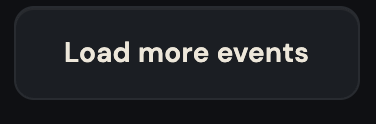
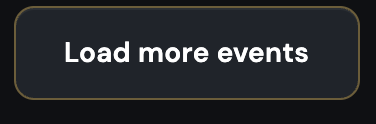
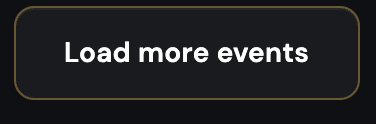
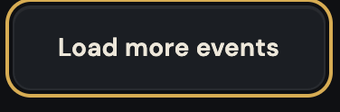
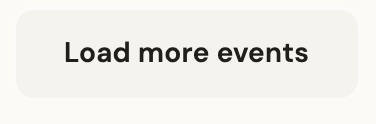
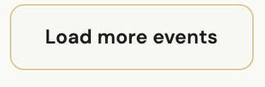
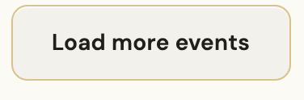
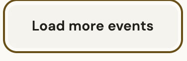

Load more
Every rule that paints this component, in one file. Colour through a role, geometry straight from a primitive.
What it is
The end of the list, and the offer to have more of it. One quiet chip under the last card, centred, wide enough to hit with a thumb and quiet enough that it does not compete with the cards above it.
It is the visible half of a decision the product made about pagination: the feed does not number its pages and it does not load as you scroll. A person asks for more, once, and the screen keeps its scroll position. That is why this is a control and not a sentinel.
Anatomy
Which part is which, in the product's own words. Every class named here is one this file styles, and the build fails if it is not.
.load-more- the chip. Graphite ground, hairline edge, pill corners, the label in the body face..load-more-wrap- the band it is centred in, which is what keeps it from reading as the last card in the grid.
Live
The component in the markup it ships with, quoted from the frozen kit, inside the product's own wrapper and painted by components/index.css alone. Each frame is a page of its own, so the width under the title is a real viewport and the media queries answer to it.
Also rendered inside
The same markup, shown once on the page of the component that owns it. Nothing here is a second copy.
States, as they look
Photographs, not renderings. Each was taken in the specimen linked beside it with a REAL pointer, a real Tab and the mouse button really held down (ui-kit/_verify/states.cjs); nothing here is a state faked with a stand class, which is the rule this section used to be missing because of. One row per distinct FACE: two elements that measure the same at rest are one picture, however many screens carry them, and that grouping is computed rather than chosen. The pictures go stale the moment a rule changes, so each one records the files it was taken from and python3 ui-kit/_states.py fails when their bytes move.
Rest is the graphite chip: a quiet ground inside a hairline. Hover takes the ground one step and the edge to the soft brass, the same pair the category chips and the filter chips answer with, which is what makes those three one family to a person's eye. Held down it settles onto the pressed stone. The focus ring is the system's, unchanged, because the ground it stands on is the ordinary one.








When to use
The judgement a generator cannot read out of css, and the reason ui-kit/authored/loadmore.md exists.
At the foot of a list that has more behind it, and only there. Nine screens: the four categories and the general feed, each logged in and logged out.
It does not belong under a list that is complete, and it does not belong under a list that is empty. Both of those already have their own answers: a complete list simply ends, and an empty one takes a state-block, whose sentence says why there is nothing and whose control offers a way out. Putting a Load more under an empty feed asks a person to fetch more of nothing.
The rule, and the anti-rule
One sentence to follow and one mistake worth naming. An anti-rule has to name the component that should have been used instead, or it is a complaint rather than an address, and the build checks that it does.
One per list, at the foot, and the label names what is being loaded: Load more events, not "Load more".
Never use it as the action of an empty screen: nothing is behind it there, and the control that belongs under an empty list is the state-block one, which says what happened before it offers anything.
Seen: wireframes/_critique.md L14, the dead-end finding on the eight category empty screens, where the empty state's own CTA led nowhere. The same screens are the ones this component is deliberately absent from.
Roles it reads
Colour comes in only through these. Change one on the token page and it changes here and on every screen at once.
--bevel-notice--bg-chip--bg-control-hover--bg-pressed--edge-groove-light--line-brass-soft--text-chip-hover--text-strongClasses
Every class this file styles, and how many of the 105 painted screens carry it. A zero is not automatically dead: the last column says whether the class is built at runtime, shown only in the kit, a leftover of the grey wireframes, used by a course page, or genuinely used by nothing. Gate 30 fails the build on the last kind.
| class | screens | if zero |
|---|---|---|
| .app-case | 105 | |
| .load-more | 9 | |
| .load-more-wrap | 9 |
Where it stands
Written from
The authored half of this page is the one artefact here no gate can read: a sentence cannot be checked for being true. So it names its sources before it says anything, and the build fails when one of them does not exist. Read this first if you doubt a claim above it.
ui-kit/docs/inventory.mdL91 - "Load-more control", filed L1, on feed and category, states rest / hover, 20+ screens claimed.- The painted screens, counted: 9 carry it, all of them a feed or a category in its full state. It is absent from every empty, error and loading variant, which is the decision this page is mostly about.
voice/docs/microcopy.md, where the label is Load more events and not "Show more", "Next" or a page number.components/loadmore.css, whose hover reads--bg-control-hoverand--line-brass-soft: the graphite chip family's answer, not the button family's.
What the file says
The selectors and the css, for a person about to edit them. To change this component, edit components/loadmore.css; to change a value it reads, edit the role in components/tokens.css.
Every state rule, and what it moves
| selector | what moves |
|---|---|
| .load-more:active | transform:translateY(0) |
| .app-case .load-more:hover:not(:disabled) | border-color:var(--line-brass-soft);background:var(--bg-control-hover);color:var(--text-strong);transform:none |
| .app-case .load-more:active:not(:disabled) | background:var(--bg-pressed) |
The tokens these states read, on both grounds
Neither panel is a screenshot. Each carries data-theme itself, so the token resolves inside it and a role that was given a value in only one theme shows up here as a control that does not move.
--line-brass-softConfirm betthe edge this state draws--bg-control-hoverConfirm betthe ground the control settles onto--text-strongConfirm betthe label, on the ground this state puts it on--bg-pressedConfirm betthe ground the control settles onto--line-brass-softConfirm betthe edge this state draws--bg-control-hoverConfirm betthe ground the control settles onto--text-strongConfirm betthe label, on the ground this state puts it on--bg-pressedConfirm betthe ground the control settles ontocomponents/loadmore.css
/* components/loadmore.css
Component: loadmore. Classes: .load-more, .load-more-wrap.
Reads: --bevel-notice, --bg-chip, --bg-control-hover, --bg-pressed, --edge-groove-light, --line-brass-soft, --text-chip-hover, --text-strong
Stand: ui-kit/loadmore.html
Stands on: 9 ui-visual screens (event-feed-crypto-logged-out.html, event-feed-crypto.html, event-feed-culture-logged-out.html, event-feed-culture.html, event-feed-general-logged-out.html, ...)
Colour goes through a role, geometry straight from a primitive. No em dash. */
.load-more-wrap{display:flex;justify-content:center}
.load-more{cursor:pointer}
/* Dead, and left dead on purpose so the next pass deletes it knowing what it was.
It neutralised .load-more:hover{transform:translateY(-1px)}, the grey-kit lift the
step 7 deletion pass removed. Nothing in components/ or base.css gives .load-more a
transform any more, so this moves the button from where it is to where it is. Its
pair is the transform:none on the painted hover below, which was overriding that
same lift. The two are one deletion, not two. */
.load-more:active{transform:translateY(0)}
.app-case .load-more-wrap{padding:var(--space-16) var(--space-20) var(--space-2)}
.app-case .load-more{font-family:var(--font-body);font-weight:var(--weight-semibold);font-size:var(--text-14);letter-spacing:.01em;color:var(--text-chip-hover);background:var(--bg-chip);border:1px solid var(--bevel-notice);border-radius:var(--radius-10);min-height:var(--control-44);padding:var(--space-12) var(--space-24);box-shadow:inset 0 1px 0 var(--edge-groove-light);transition:border-color var(--dur-base) ease,background var(--dur-base) ease,color var(--dur-base) ease}
/* :not(:disabled) for the reason input.css carries it: a control that cannot be pressed
must not answer the pointer, and :hover still matches a disabled button even where
:active does not. No :disabled rule follows it, because nothing in this product
disables Load more: all 9 stands and the kit specimen are a plain
<button class="load-more"> with no disabled or aria-disabled attribute and no script
that sets one. The guard is form; a disabled skin here would be an invented state.
No :focus-visible either, for the same reason 24 other files no longer have one:
base.css declares the ring once and this button sits on --bg-chip, which the default
ring is visible against on both grounds. */
.app-case .load-more:hover:not(:disabled){border-color:var(--line-brass-soft);background:var(--bg-control-hover);color:var(--text-strong);transform:none}
.app-case .load-more:active:not(:disabled){background:var(--bg-pressed)}